🎯 模組一：8-1 獨占廠商決定價格的考量因素與短期均衡點
課本 8-1-1 節 ｜ 價格決定者並非漫天要價📌 1. 獨占廠商的雙重考量：需求彈性與生產成本
獨占廠商雖是市場中唯一的供給者（價格決定者 Price Maker），但面對負斜率的市場需求曲線（即 AR 線），想要增加銷量就必須降價，因此不能任意漫天要價，受限於買方的需求彈性與自身成本結構：
- 需求彈性連動總收益：
- 當 Ed ＞ 1（富有彈性）：降價使銷量增加比率大於價格下降比率，MR ＞ 0，總收益 TR 增加。
- 當 Ed ＝ 1（單一彈性）：MR ＝ 0，總收益 TR 達到最高點。
- 當 Ed ＜ 1（缺乏彈性）：降價使MR ＜ 0，總收益 TR 反而縮水減少！
- 統測鐵律：獨占廠商必定在 Ed ＞ 1 區域生產！
因為追求利潤極大化的邊際成本 MC 恆為正（MC ＞ 0），均衡條件 MR ＝ MC 表示 MR 必須大於 0。邊際收益大於 0 的區間正好落在 Ed ＞ 1！獨占廠商絕不會在 Ed ＜ 1 的區域生產！
幾何特徵：獨占廠商的售價高於邊際成本（P* ＞ MR ＝ MC）。
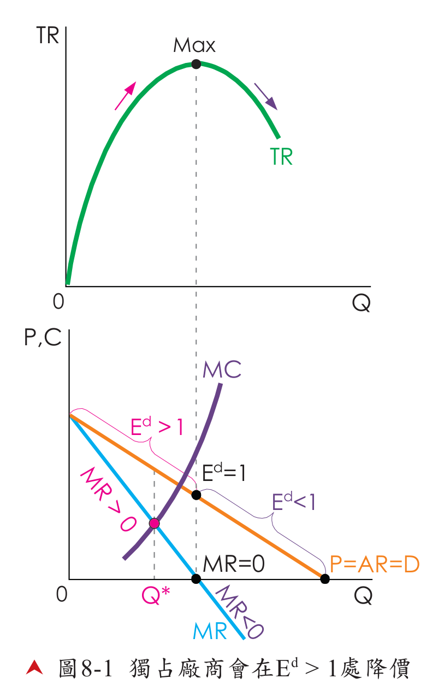
1 處降價" onclick="openModal(this.src)">⚖️ 模組二：8-1-2 獨占廠商短期均衡的三種情況
課本 8-1-2 節 ｜ 盈虧判斷看 AR 與 AC 之高低獨占廠商在短期依 MR ＝ MC 之 E 點決定最適產量 Q* 後，其利潤（超額利潤、正常利潤或經濟損失）取決於 P（AR）與平均成本 AC 的相對大小：
一、有超額利潤（P ＝ AR ＞ AC，π ＞ 0）
- 曲線關係：AR 線與 AC 線相交。
- 幾何位置：在最適產量 Q* 處，AR ＞ AC。Q* 大多對應在 AC 遞減階段（因為 MR 線在 AR 下方，使得 MR=MC 的交點通常落在 AC 最低點的左側）。
- 利潤計算：
TR ＝ P* × Q* ＝ 矩形 P*fQ*0
－ TC ＝ AC × Q* ＝ 矩形 hgQ*0
＝ 經濟利潤 π ＝ 矩形 P*fgh ＞ 0
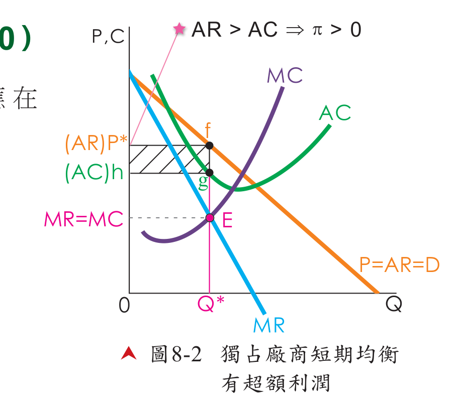
二、有正常利潤（P ＝ AR ＝ AC，π ＝ 0）
- 曲線關係：AR 線與 AC 線相切於 A 點。
- 幾何位置：注意！相切點 A 並非 AC 的最低點，而是對應在 AC 遞減處！
- 利潤計算：
TR ＝ 矩形 P*AQ*0
－ TC ＝ 矩形 P*AQ*0
＝ 經濟利潤 π ＝ 0（剛好賺得正常利潤）
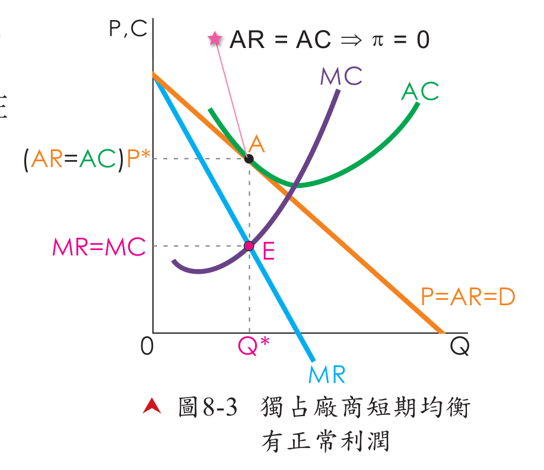
三、有經濟損失（P ＝ AR ＜ AC，π ＜ 0）
- 曲線關係：AR 線與 AC 線相離（AC 線整條高於 AR 線）。
- 幾何位置：Q* 對應在 AC 遞減處，售價低於每單位生產成本。
- 虧損計算：
TR ＝ 矩形 P*aQ*0
－ TC ＝ 矩形 cbQ*0
＝ 經濟虧損 π ＝ 矩形 cbaP* ＜ 0
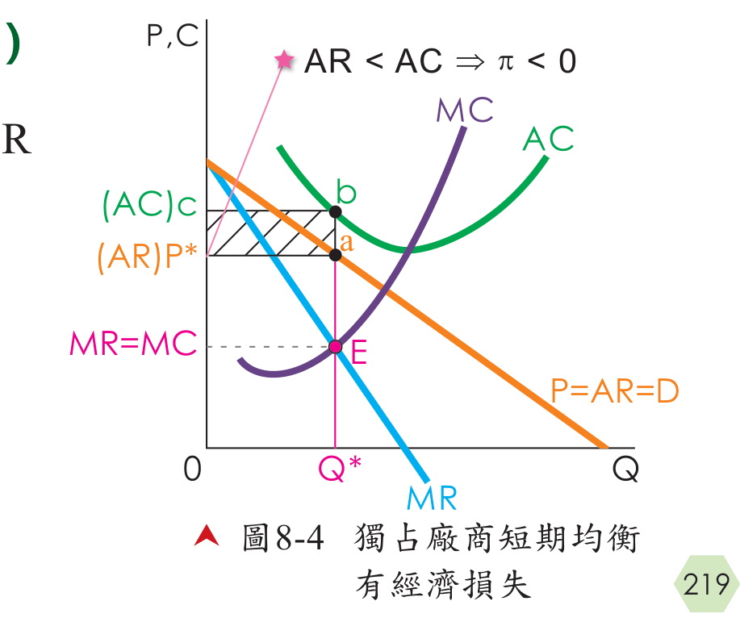
🛑 模組三：8-1-3 虧損時的營業決策與 8-1-4 無短期供給曲線
課本 8-1-3 & 8-1-4 節 ｜ 去留看 AVC・獨占無供給線📌 虧損時營業決策的核心準則：看 P 與 AVC 之大小
短期受制於固定成本（TFC），若歇業必定損失全部 TFC。因此只要售價高於平均變動成本（P ＞ AVC），營收能彌補全部 TVC 還有剩餘貼補 TFC，廠商就會選擇繼續生產！
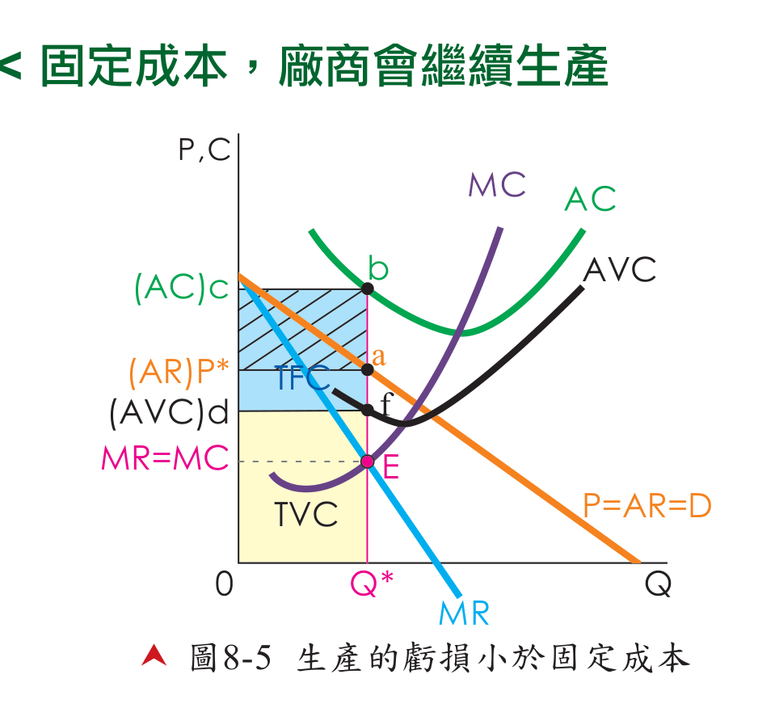
繼續生產（虧損 ＜ TFC）
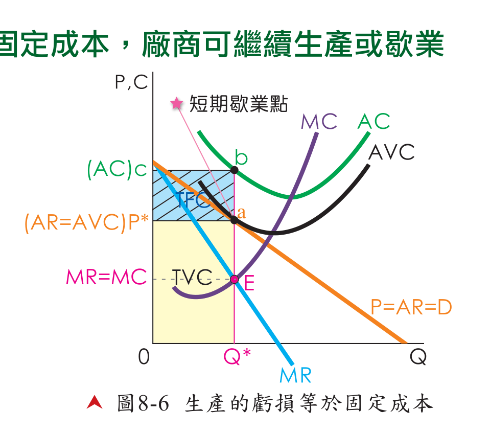
短期歇業點（續產或歇業皆可）
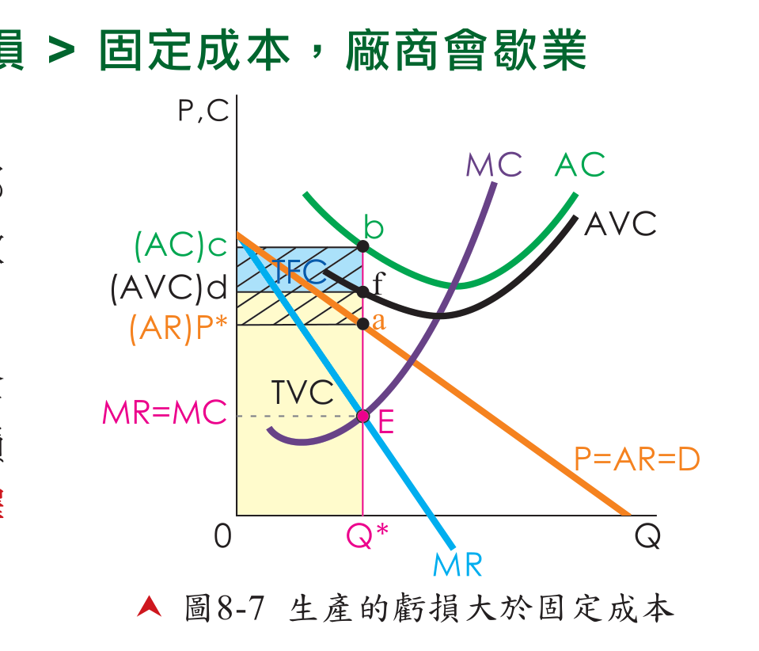
立即停業／歇業（虧損 ＞ TFC）
嚴格經濟學定義：供給曲線是指在不同的價格下，廠商願意且能夠提供銷售的產量，即「價格」與「數量」必須存在嚴格的一對一函數對應關係。
在獨占市場中：
- 獨占廠商是價格決定者，價格取決於需求曲線的位置與斜率（彈性）。
- 當市場需求變動時（如需求曲線發生旋轉或位移），同一個價格可能對應出不同的產量，或同一產量對應不同的價格。
- 因此，獨占廠商無法繪出一條價格與數量一對一對應的曲線，故結論為：「獨占廠商沒有供給曲線」！
🏭 模組四：8-2 獨占廠商的長期均衡與超額產能
課本 8-2 節 ｜ 長期絕不虧損・必在 LAC 遞減處📌 長期均衡核心條件：MR ＝ SMC ＝ LMC
獨占市場具有極高的進入障礙（專利、特許、規模經濟），新廠商無法自由加入。因此：
- 獨占廠商在長期能持續保有超額利潤（P ＞ LAC）或正常利潤（P ＝ LAC）。
- 長期絕不會有經濟損失！（長期所有要素均可調整，若長期仍虧損廠商便會退出市場，除非是政府補貼支援的民生公用事業）。
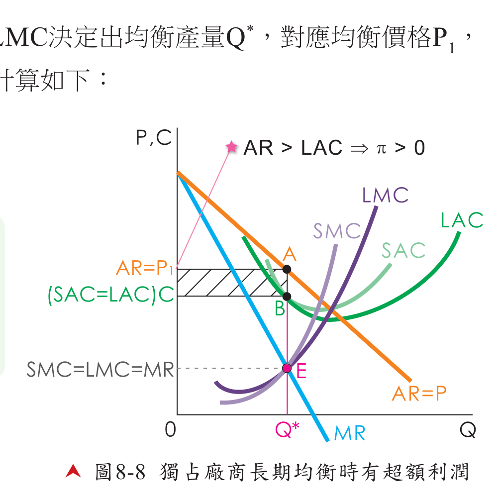
• 最適產量 Q* 由 MR = SMC = LMC 決定
• 超額利潤 π ＝ 矩形 P1ABC ＞ 0
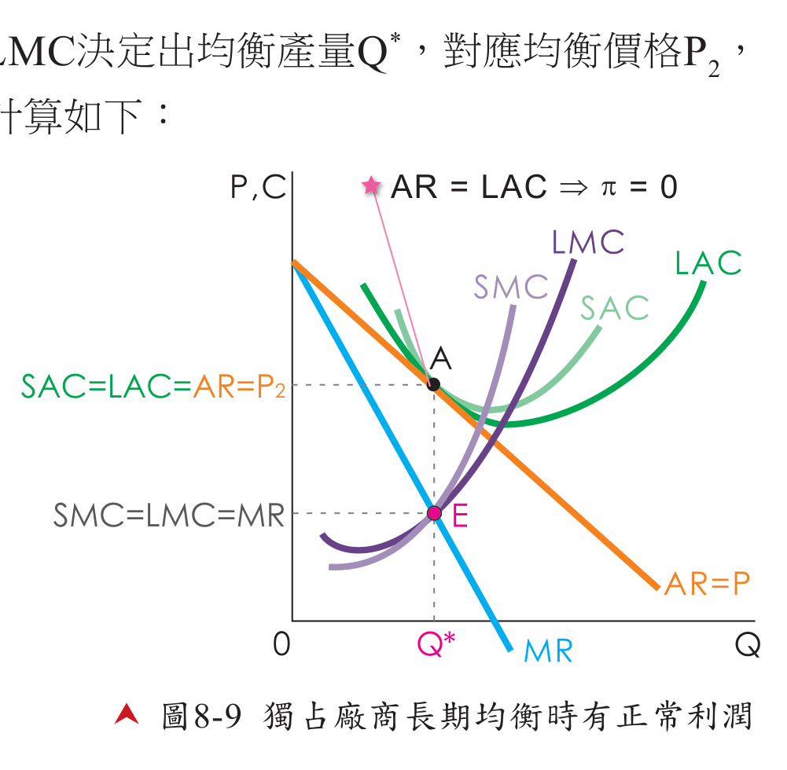
• AR 線與 LAC 線相切於 A 點
• 經濟利潤 π ＝ 0（廠商僅賺取正常利潤）
⚠️ 統測陷阱提防：獨占廠商長期生產點在 LAC 哪一段？
因為獨占廠商面對負斜率需求線（AR 下斜），MR 必然位於 AR 下方。當 MR ＝ LMC 決定 Q* 時，該產量對應在 LAC 曲線的 「遞減階段」（即位於 LAC 最低點的左側）！
這代表廠商未將設備產能發揮到最低單位成本規模，存在「超額產能（Excess Capacity）」，造成生產無效率。
🎟️ 模組五：8-3 差別訂價（一、二、三級）與實務訂價策略
課本 8-3 節 ｜ 統測超高頻核心計算題庫📌 廠商實施差別訂價（Price Discrimination）的四大必備條件
- 廠商必須具有市場獨占力（價格決定者，需求曲線負斜率）。
- 能明確劃分不同特徵的市場或消費族群。
- 各市場之間產品無法轉售（杜絕低買高賣套利，如要求出示證件、不可轉讓票）。
- 各市場的需求價格彈性（Ed）必須不同。
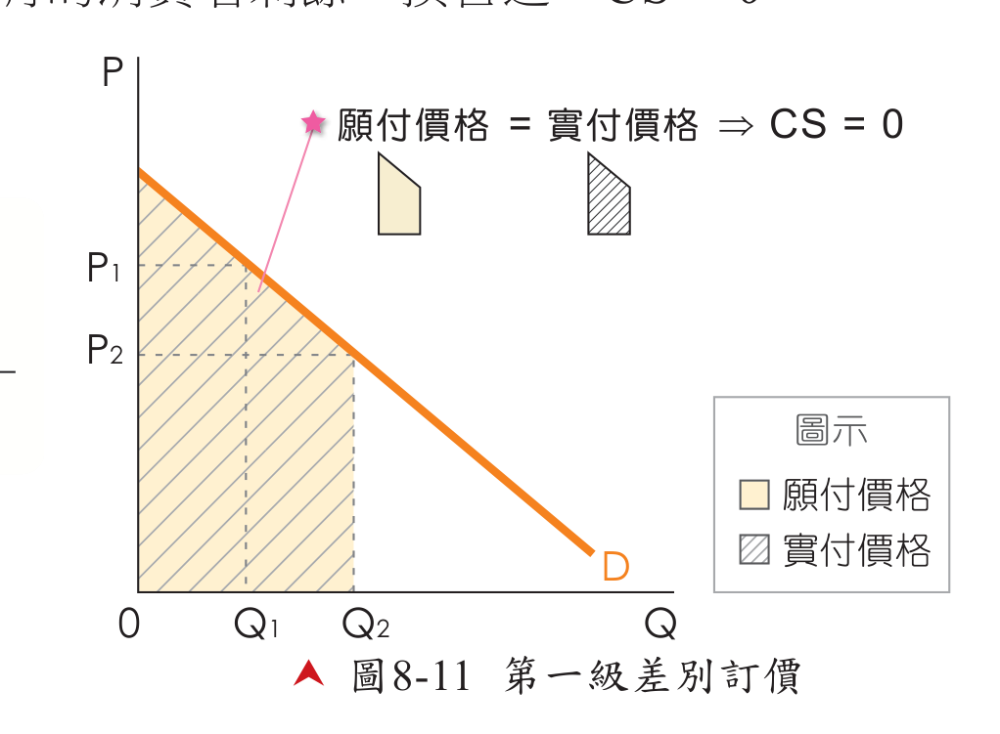
🥇 第一級差別訂價（完全差別訂價 / 一客一價）
- 做法：廠商完全掌握消費者的需求曲線，對每一單位產品皆依消費者願意支付的最高價格訂價。
- 結果：消費者剩餘全部被廠商剝奪，轉化為廠商超額利潤（CS ＝ 0）。
- 效率：此時生產量擴大到 P ＝ MC，社會總福利達到最大，無謂損失為零（DWL ＝ 0）！
- 實例：怪醫黑傑克依身家索費、風水算命大師依家境開價、名律師客製收費。
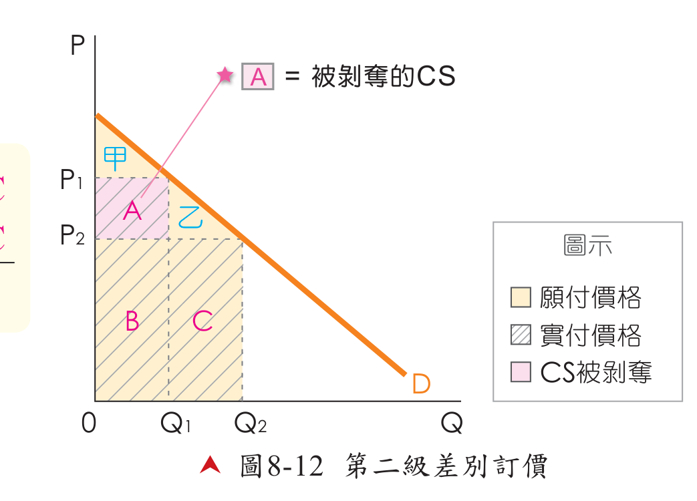
🥈 第二級差別訂價（區間訂價 / 數量折讓）
- 做法：根據消費者的購買數量分段計價（例如 Q1 以內單價 P1，Q1 到 Q2 單價降為 P2）。
- 結果：消費者剩餘部分被廠商剝奪（剝奪了圖中梯形 A 的面積）。
- 實例：台電/自來水階梯式累進費率、甘蔗汁一瓶80三瓶200、好市多量販折扣、買二送一。
🥉 第三級差別訂價（市場分割訂價）與彈性定價法則
統測計算題核心公式
- 核心結論（彈性大訂低價、彈性小訂高價）：
若 EdA ＜ EdB（A 市場彈性小、B 市場彈性大），則 PA ＞ PB！ - 直觀背法：
- 需求彈性小（學生/軍警除外的一般成人、急診患者）：缺乏替代品或迫切需要，對價格不敏感，廠商「訂高價」多賺錢！
- 需求彈性大（學生、兒童、早鳥旅客）：預算有限、替代方案多，對價格極度敏感，廠商「訂低價」薄利多銷吸引買氣！
- 實例：電影院學生票與軍警票便宜、高鐵早鳥票便宜、軟體個人版與企業版不同價。
📋 獨占廠商四種訂價原則與其他實務訂價比較表
| 訂價方法 | 訂價原則 | 市場特徵與經濟含義 | 常考實例 |
|---|---|---|---|
| 獨占利潤法 | MR ＝ MC | 售價最高、產量最少、消費者負擔最重、廠商超額利潤最大。 | 專利新藥、鑽石珠寶 |
| 最大收入法 | MR ＝ 0 | 總收益 TR 達到最高點，需求彈性 Ed ＝ 1 處。 | 演唱會最後出清門票 |
| 邊際成本定價法 | P ＝ MC | 資源配置效率最佳、社會福利最大，但自然獨占廠商可能陷入虧損需政府補貼。 | 捷運、自來水基本費 |
| 平均成本定價法 | P ＝ AC | 最公平的訂價法，廠商收支平衡只賺取正常利潤（π ＝ 0）。 | 公用事業政府價格管制 |
| 兩段式訂價法 | 入會費＋使用費 | 先收取定額入場費（抽取 CS），再依使用量收取使用費。 | Costco會員卡、遊樂園門票 |
| 尖峰負載訂價法 | 尖峰高價、離峰低價 | 利用產能容量限制，在尖峰時段抑止過度需求，離峰吸引利用。 | 台電夏月電價、離峰電話費 |
⚖️ 模組六：8-4 獨占市場評論與 8-5 完全競爭 vs 獨占全對比
課本 8-4 & 8-5 節 ｜ 無謂損失 DWL 幾何圖解與總整理
📌 獨占的無謂損失（Deadweight Loss, DWL）
- 完全競爭社會福利：
在 E 點（P ＝ MC）生產，產量最大（Q*完競），價格最低（P*完競）。
社會總福利 ＝ CS ＋ PS ＝ 三角形 AEB（達到社會福利最大，無 DWL）。 - 獨占市場社會福利：
在 F 點（MR ＝ MC）決定產量，對應 AR 訂價為 P*獨占。
產量少（Q*獨占），價格高（P*獨占）。
社會總福利 ＝ 四邊形 AGFB。 - 福利淨損失（DWL）：
獨占造成的社會福利損失 ＝ 三角形 GEF！
其中上部三角形 GEH 為消費者剩餘損失，下部三角形 EFH 為生產者剩餘損失。此損失任何人皆未獲得，稱為「無謂損失」或「獨占的社會成本」。
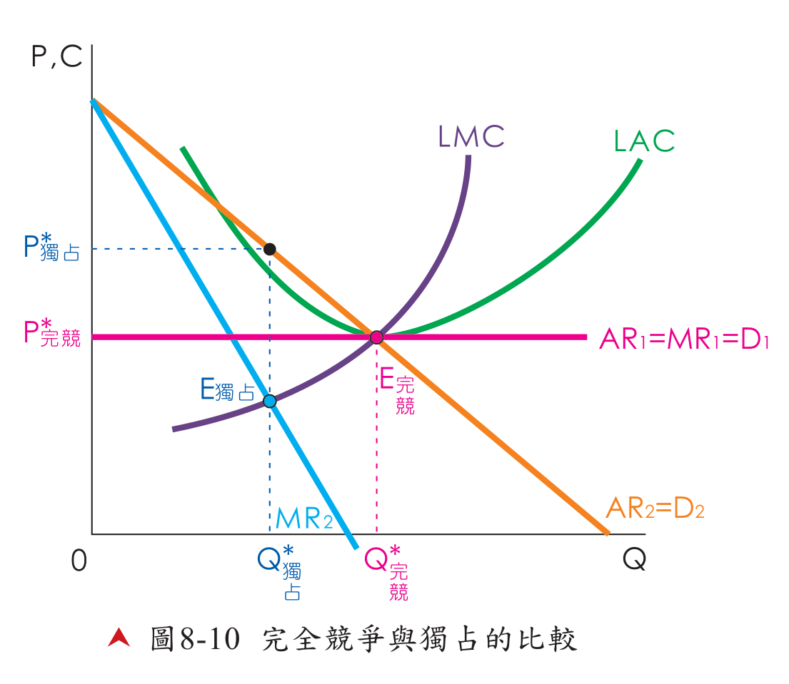
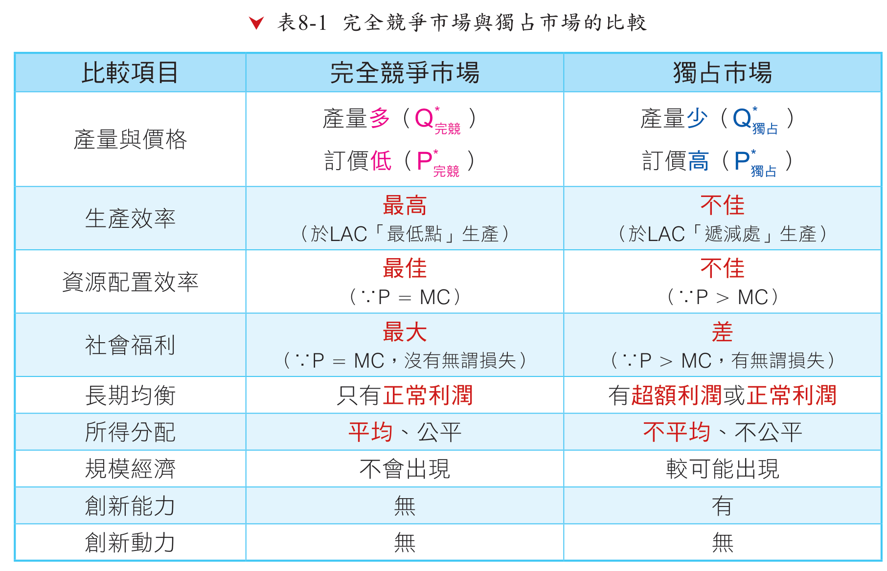
⚠️ X-無效率（X-Inefficiency）
由於獨占廠商缺乏外部市場競爭壓力，管理階層容易鬆懈怠惰、人員冗贅、成本管控不良，導致實際生產成本高於最低可能成本。
⚠️ 尋租行為（Rent-Seeking）
廠商為了獲取或維持排他性獨占特權，耗費大量金錢與資源進行政治遊說、關說或公關活動，這些支出不創造任何社會產值，形成純粹的社會浪費。
🎯 課本原版題庫實戰測驗（選自課本 P.232～P.235 章末評量）
即測即評 ｜ 點擊選項立刻驗證觀念解析：所有廠商（不論完全競爭或不完全競爭）追求利潤極大化或虧損最小化的短期均衡條件皆為 MR ＝ MC。完全競爭因 P ＝ MR，故亦可寫為 P ＝ MC；但獨占廠商 P ＞ MR，故其均衡條件為 MR ＝ MC。
解析：獨占廠商面對負斜率需求曲線，其定價取決於市場需求彈性與位置。當需求變動時，同價格可對應不同產量，或同產量對應不同價格，價格與產量不存在一對一對應關係，因此獨占廠商沒有供給曲線。（選項 C 為完全競爭廠商的短期供給線）。
解析：差別訂價的本質在於廠商利用不同群體的願付價格，將原本屬於消費者的「消費者剩餘（CS）」剝奪並轉化為廠商自身的利潤。第一級差別訂價甚至將 CS 剝奪至 0。
解析：
由阿摩羅梭-羅賓遜公式：P(1 － 1/Ed) ＝ MC
• A 市場：PA(1 － 1/2) ＝ 60 ➔ PA × 0.5 ＝ 60 ➔ PA ＝ 120 元（目前訂價 130 元偏高，應降低售價至 120 元）。
• B 市場：PB(1 － 1/3) ＝ 60 ➔ PB × (2/3) ＝ 60 ➔ PB ＝ 90 元（目前訂價 90 元正好為最適價格，維持原價）。
解析：
① 利潤極大化條件：MR ＝ MC ➔ 20 － 2Q ＝ 4 ➔ 2Q ＝ 16 ➔ Q* ＝ 8 杯。
② 代入需求函數求價格：Q ＝ 20 － P ➔ 8 ＝ 20 － P ➔ P* ＝ 12 元。
（⚠️ 統測常犯錯誤：千重萬別把 Q 代回 MR 去算價格！價格是由需求線 P ＝ 20 － Q 決定的！）